Gym Application Management App
In this project, I had the opportunity to work with my partner. After finding a client and analyzing their problem, we identified the main issue they were facing. The gym was handling all of its operations on paper, which made it difficult to track who owed money and access important client information. Additionally, new clients were also registered on paper, which we felt was outdated. Therefore, my partner and I decided to create an app for the gym.
At first, we were unsure which tools to use, but after some research, we decided to use .NET, as it was ideal for cross-platform development. This would allow the gym to use the app on both Mac and Windows. We divided the tasks, with my teammate focusing on the backend, as he was more familiar with .NET, and I worked on the front end. Although I primarily worked on the front end, I also assisted my teammate with the backend.
The main purpose of the app was to make the gym employees' work easier. We designed a fully customized app based on the gym's needs. For example, the app includes a section to track all the gym members, a section for employees, and a section for employee tasks. Additionally, we implemented features requested by the gym owner, such as a notification on the main page to alert when a member owes money for a month or when a membership is about to expire. We also created a login system with different permissions, allowing the admin to add or delete employees.
Finally, we integrated a QR code scanning feature. When new users scanned their QR cards, employees could easily identify them and access their information. We also added a feature for employees to create new members in the app, making the process simpler for them.
For the front end, I initially designed a mockup using Figma, which we showed to the gym owner. After the gym owner approved the design, I started working on the development.
View Figma PrototypeBomba Johnny Game
Currently, I’m working on a horror maze-running FPS game called Bomba Jhonny, which will soon be available on Steam. Players navigate a maze filled with traps and enemies, progressing through increasingly challenging levels.
My role in this Unity-based project includes designing menu systems like the options menu and pause menu. Our team is aiming to finalize the game by the end of 2025, though it could be released earlier if progress remains steady.
 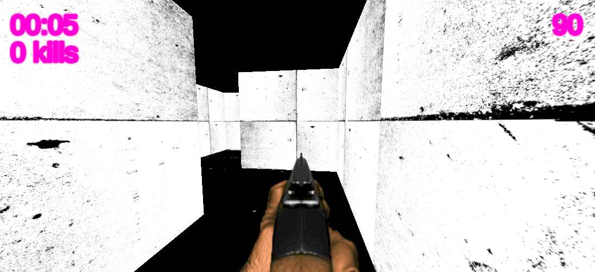
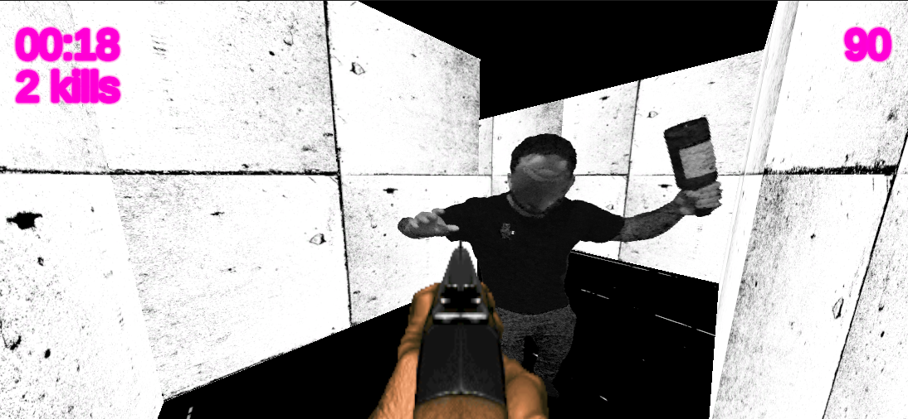
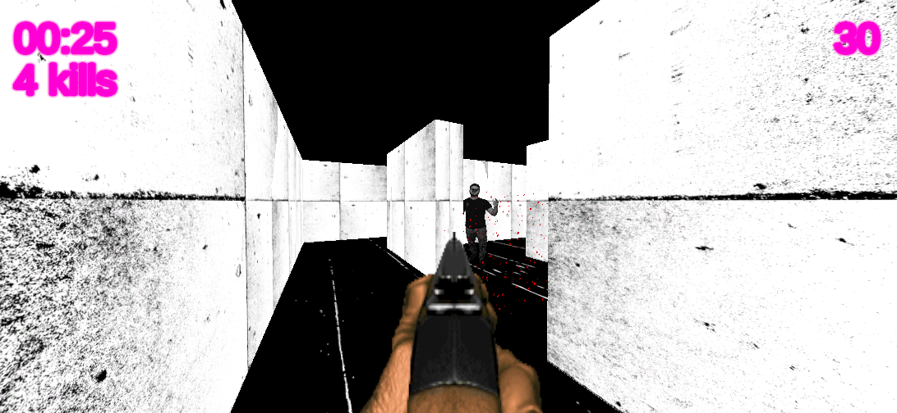
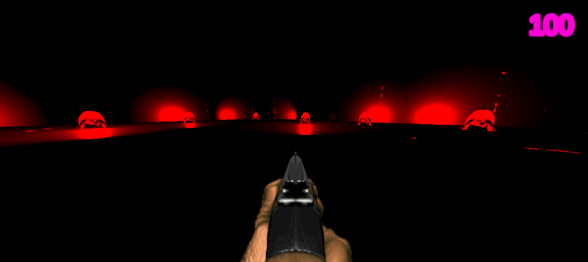
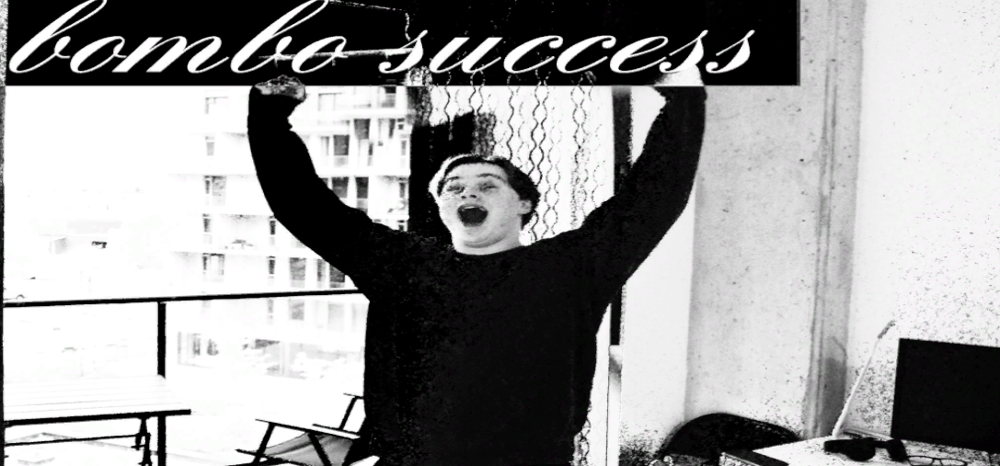
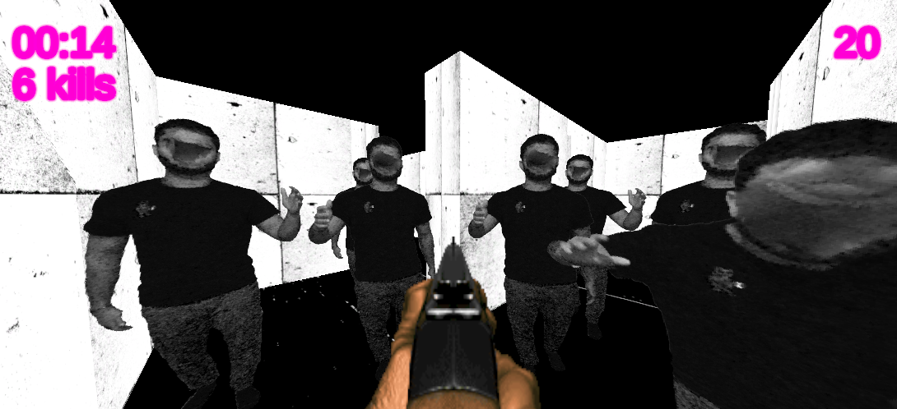
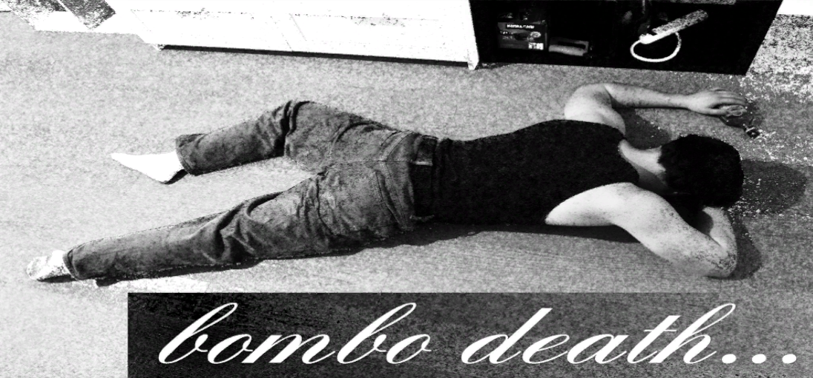
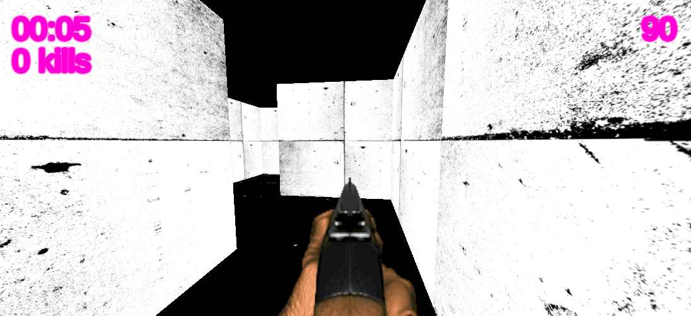
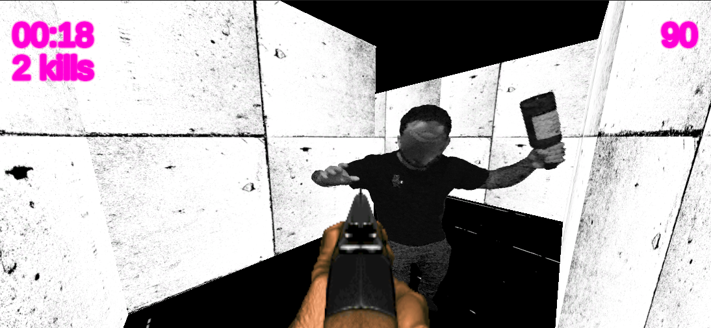
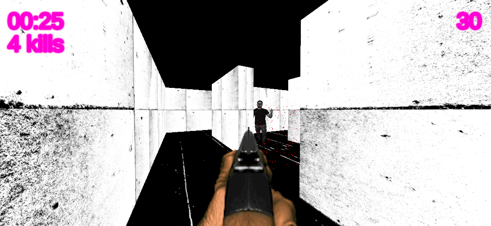
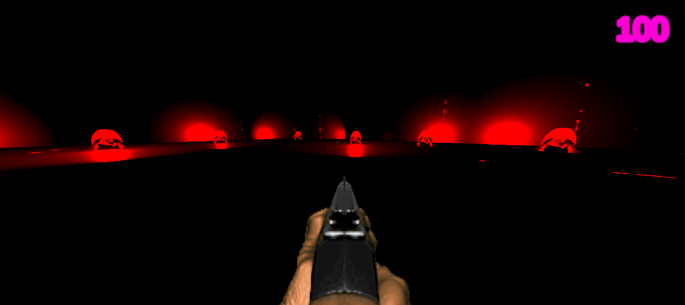
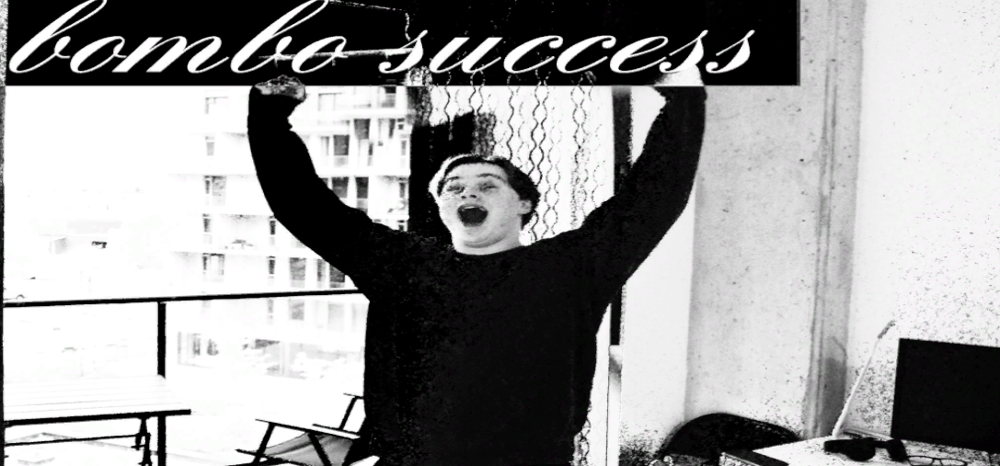
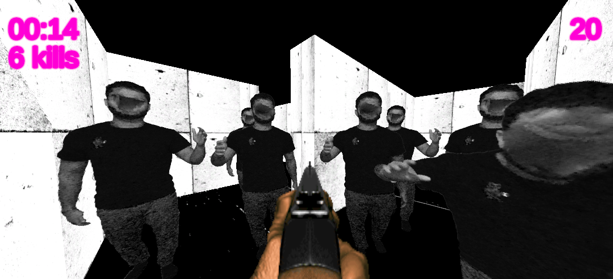
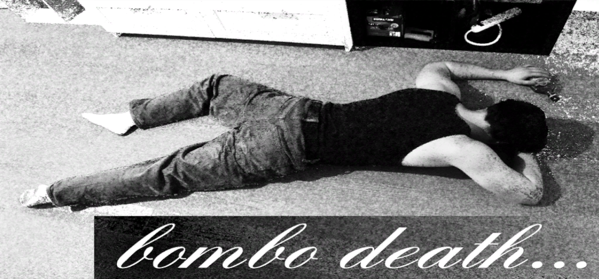
Other Projects
Throughout my DEC at Vanier College, I worked on various projects, mainly using C#. I also developed applications in PHP, HTML, CSS, JavaScript, and Unity, gaining experience in both individual and collaborative environments.